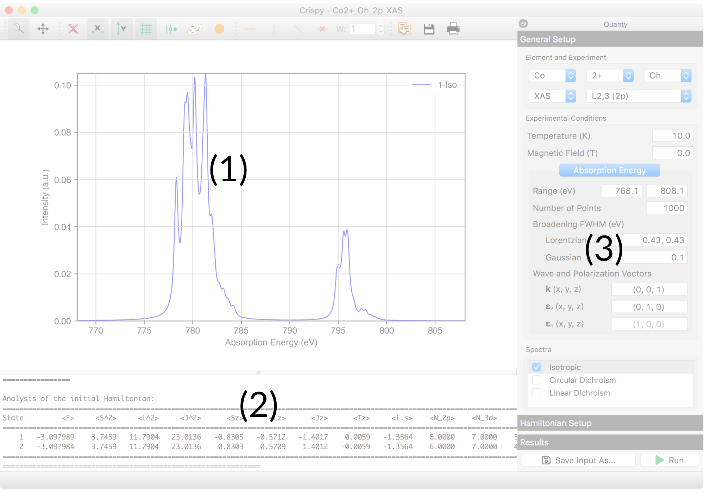
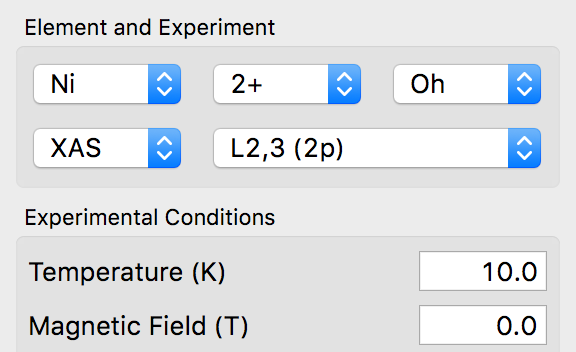
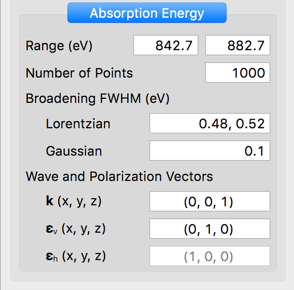
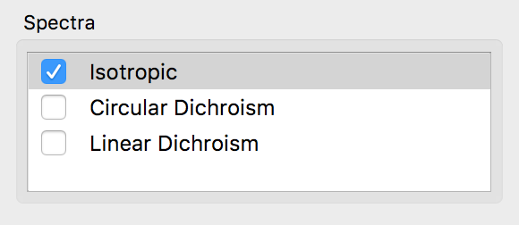
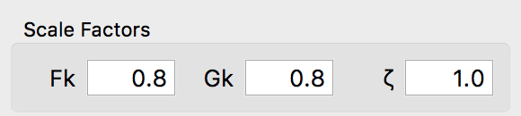
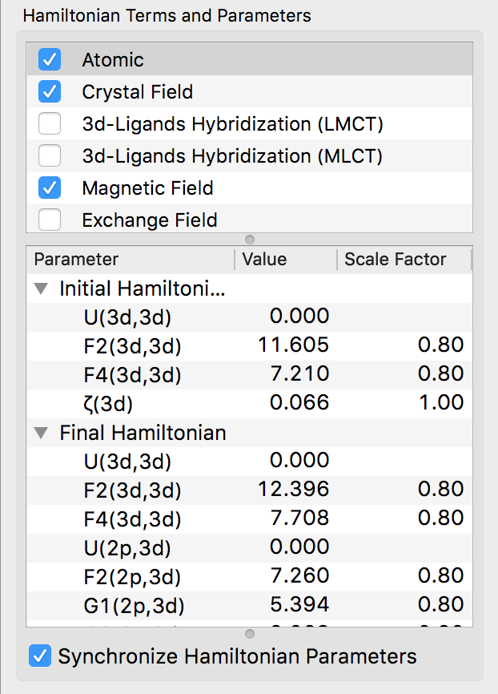
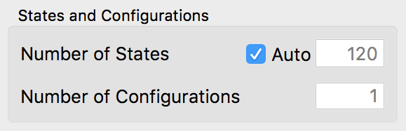
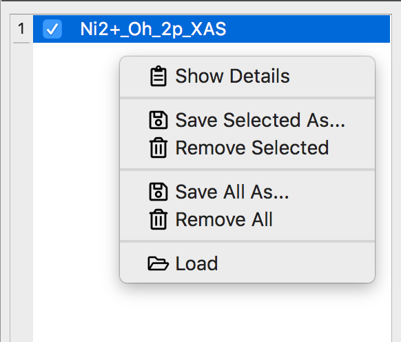
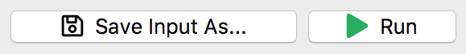

Tutorials#
On this page you will find links to a series of tutorials to help get you started with Crispy. They are largely based on tutorials kindly provided by Amélie Juhin. The tutorials are in no particular order, so you can start with the one that interests you. Nevertheless, to make things easier to follow, have a look at the quick tour of the interface below.
Crispy’s main window is divided in three parts: the plotting panel (1), the logging panel (2), and the Quanty module panel (3), as shown in the figure below.
{kind=link}

The buttons located on the top of the plotting panel can be used to change the properties of the plot, e.g zoom, scale, aspect ration, color etc. The displayed plots can also be saved using various file formats.
The progress of the calculation and eventual errors are displayed in the logging panel.
The panel of the Quanty module has a vertical tab structure. The General Setup tab is located at the top, and will always be displayed when Crispy is started. Here you can select the element, charge, and symmetry of the absorbing site. The type of experiment, edge, temperature, and magnetic field can also be selected here.
{kind=link}

Depending on the type of experiment selected above, the panel below will display a single tab with the parameters of the Absorption Energy for a XAS calculation, or two tabs, Incident Energy and Energy Transfer, for a RIXS calculation.
{kind=link}

The parameters include the energy range and the number of points for the calculated spectrum. Both Lorentzian and Gaussian functions can be used to broaden the spectrum. The Lorentzian broadening supports more complex input values. For example an energy dependent broadening can be specify by using two FWHM values, one for lower energy part of the spectrum, and a second one for the high energy part. This feature is only available for some of the available edges. Additionally the energy for the transition point between the two FWHM values can also be specified as a third parameter. This is by default the middle of the absorption energy range. Finally, the wave and polarization vectors can be specified.
At the bottom of the General Setup tab you can select the spectra to be calculated.
{kind=link}

In the Hamiltonian Setup tab you can change the parameters of the semi-empirical model used in the calculation. The scale factors for the Coulomb, exchange, and spin-orbit coupling integrals can be changed using a set of three input boxes. Note that the scale factors are used to alter the values of the Hartree—Fock integrals.
{kind=link}

Below are two panels displaying the list of Hamiltonian terms and parameters. The terms can be enabled using the tick box placed in front of the name. Selecting the name of a term will display the parameters associated with it in the panel below. Double-click on the Value or the Scaling column of a parameter to change it.
{kind=link}

At the bottom of the panel is possible to specify the number of initial Hamiltonian states to consider in the calculation. The maximum number is equal to the number of states for the initial electronic configuration, e.g. 1 state for a d0 configuration, 10 states for a d1 configuration etc. By default the number of states considered is automatically determined based on the value of Boltzmann factors at the selected temperature, i.e. only states which will have a significant occupation at this temperature will be considered. Finally, for multiconfigurational calculations it is possible to specify the number of electronic configurations to consider.
{kind=link}

Completed calculations are displayed in the Results tab. The plotting panel will be automatically updated when the selected calculation changes. Right-clicking will display a context menu with a list of possible actions, e.g. saving, loading, removing etc.
{kind=link}

At the bottom of the Quanty module panel and not part of the tab structure present above, there are two buttons. They can be used to save the input file in a different location and/or with a different name, and start the calculation. Once the calculation starts the Run button will change into a Stop button, which can be used at any time to interrupt Quanty’s run.
{kind=link}
